Monash NUMBATs
People
Posts
Projects
Events
Courses
About
Contact
Posts
Secret Santa 2023
Overview
22 November 2023
Numbats Gathering
Reducing duplication in teaching materials
As a young, impressionable undergraduate, a Computer Science lecturer once told me:
19 July 2023
Hackathon 2023
Overview
24 February 2023
Numbats Rise-up
Diving into dependen-“sea”
How CRAN packages are interconnected
When writing a package, we may want to use functions in other packages. This creates a dependency for our package and a reverse dependency on the package we borrow functions…
18 October 2022
H. Sherry Zhang
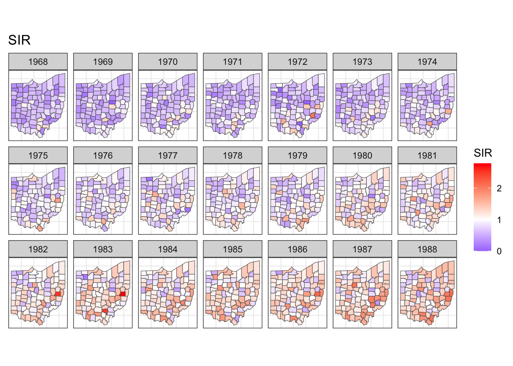
How long do maps on ggplot facets take?
If you’re a ggplot user, making faceted plots must be a tool in your belt. If you happen to do some spatial analysis, you would be familiar with maps. Today, I will show you…
27 May 2022
H. Sherry Zhang
Hexmaps with sugarbag make it easier to see the electoral map
Australia is a land of wide open spaces where the population concentrates in small areas. It can make for misleading map visualisations on statistics related to people. The…
21 May 2022
Di Cook
Do you need some analytics help? Maybe our internship program is for you!
We have a new Masters in Business Analytics in the Econometrics and Business Statistics department in the Monash Business School and in the final semester of the program…
18 February 2022
Dan Simpson
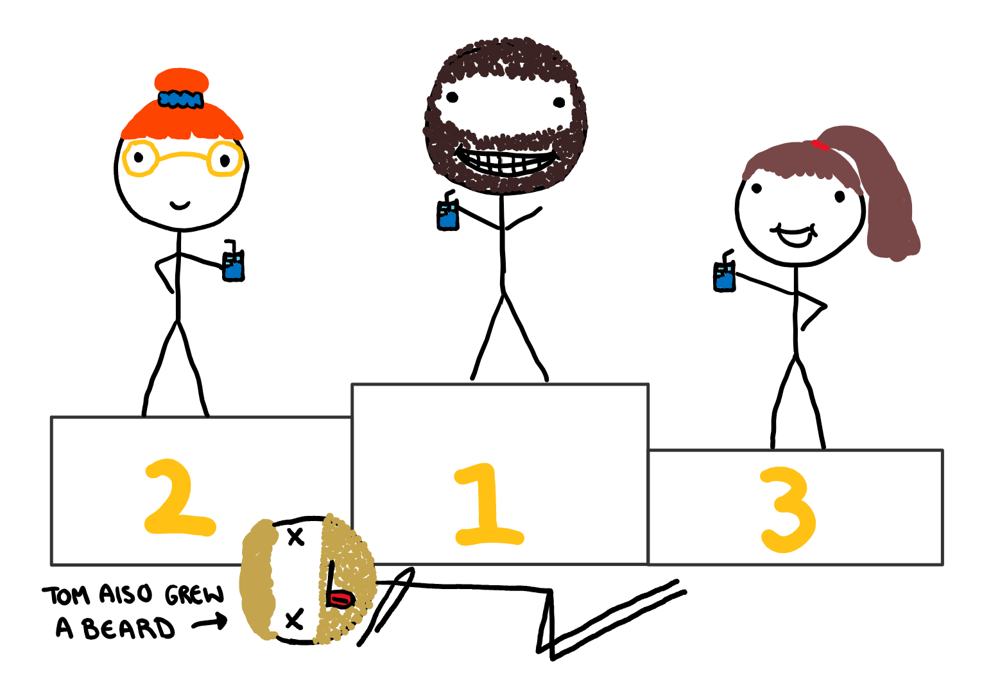
Trying to Save My Housements (Specifically Tom) from Alcohol Poisoning with Regularisation
Back when I lived with my sister I barely managed to drink once a month, and health wise, I was living a good life. Unfortunately, my sister decided to get engaged and her…
18 December 2021
Harriet Mason
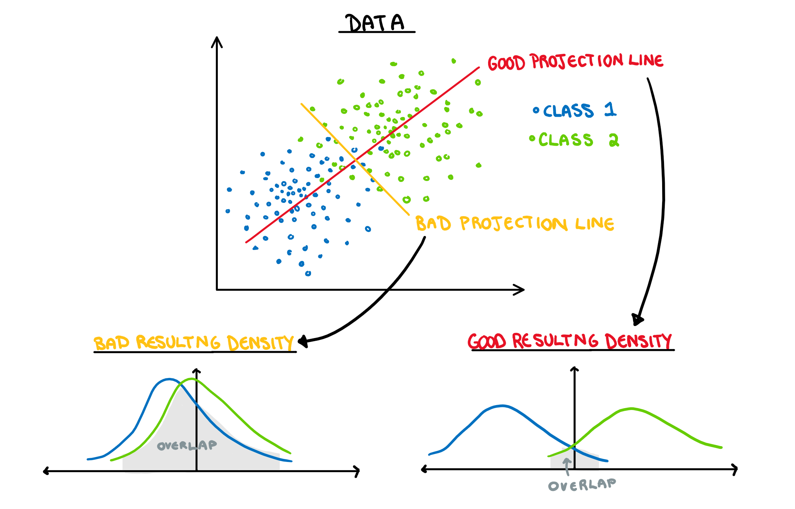
A Future Public Disturbance Explains LDA
I would like to say that I’m the type of person who would never complain at a restaurant, but deep down I know I’m one bad day away from being the woman in a viral video…
2 August 2021
Harriet Mason
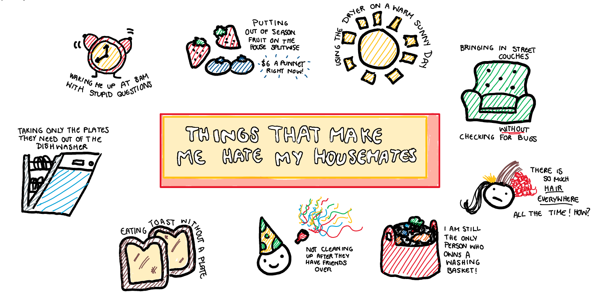
Using PCA to Bully My Housemates (Specifically Tom)
I recently moved into a share house with three of my friends, and while we generally get along pretty well, I would be lying if I said I never fantasised about burning the…
19 April 2021
Harriet Mason
Can our Masters students help you?
Do you have a data analysis task and want some help with it? We have a lot of Masters students who might be able assist.
5 March 2021
Rob J Hyndman
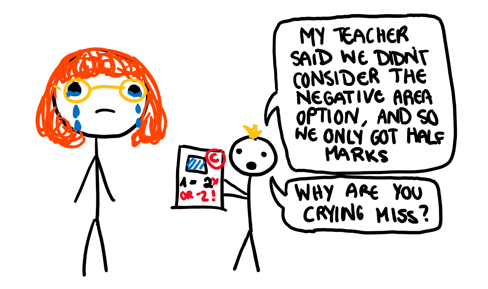
Learning Boosting Through Me Getting Fired from Tutoring
I’ve had about… 13 jobs at this point in my life. Among them were jobs like tutoring, nannying, swim teaching, ect. so I have developed had a decent level of experience in…
3 January 2021
Harriet Mason
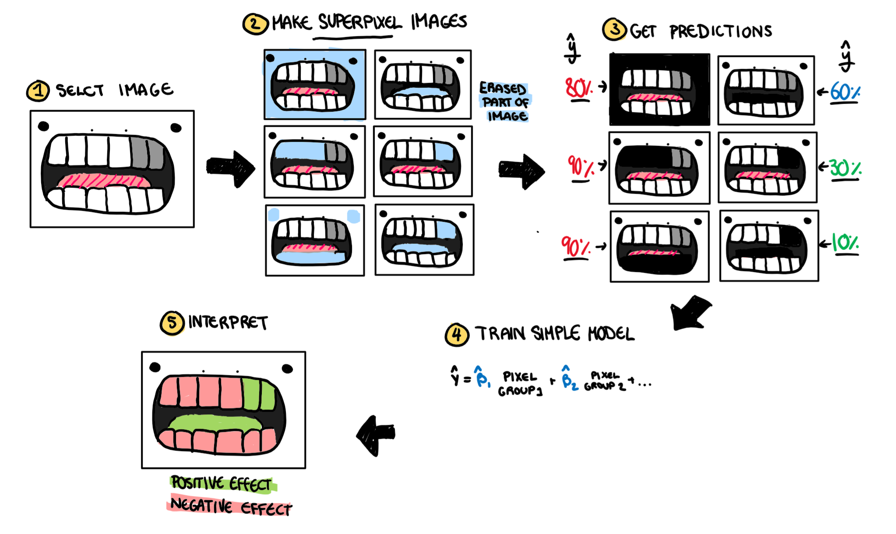
Baby Teeth are Temporary, Model Interpretability is Forever
When I found out baby teeth fall out, I realised the futility brushing them. The teeth are temporary, but those extra 5 minutes of playing Pokemon are forever. So I quit…
13 October 2020
Harriet Mason
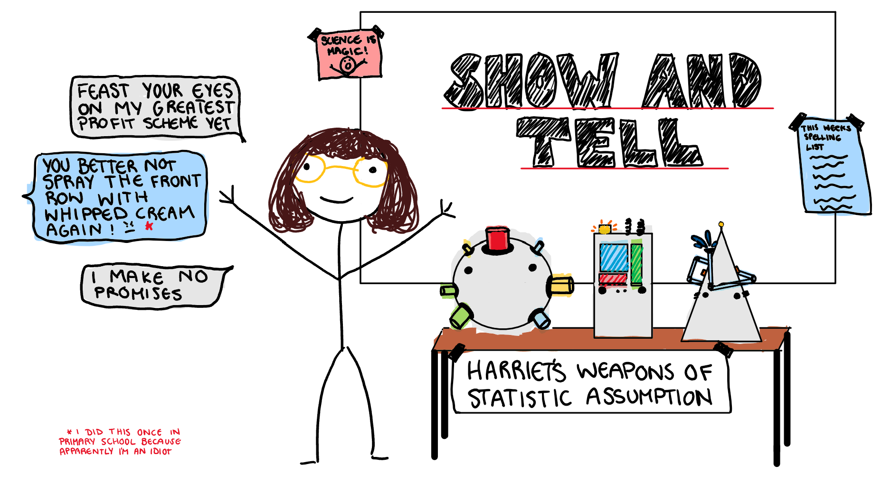
How a 5th Grader Makes $1500 in a Single Night (and How They Could Make More Using MLE)
As a child, your parents are seen as deities that can do no wrong, that is until you are doing a first aid course 10 years later and learn that a broken arm is not an “I’ll…
6 October 2020
Harriet Mason
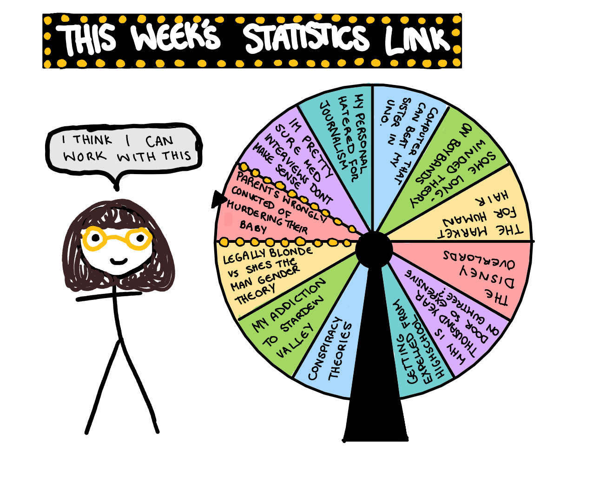
Criminal Statistics in Baby Murder Court Cases
I have had my fair share of run-ins with the legal system. Probably more than someone my age should have. Here are my three favourite interactions so far:
14 September 2020
Harriet Mason
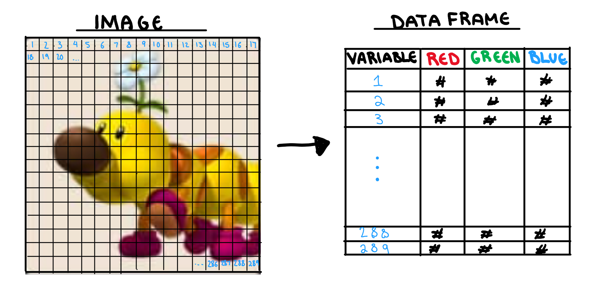
Mario Party: Destroyer of Friendships and Explainer of Convolutional Neural Networks
In pre-COVID times, my friends and I would gather around for a fun activity called “lets ruin our friendship by taking Mario party way too seriously”. The night always…
11 August 2020
Harriet Mason
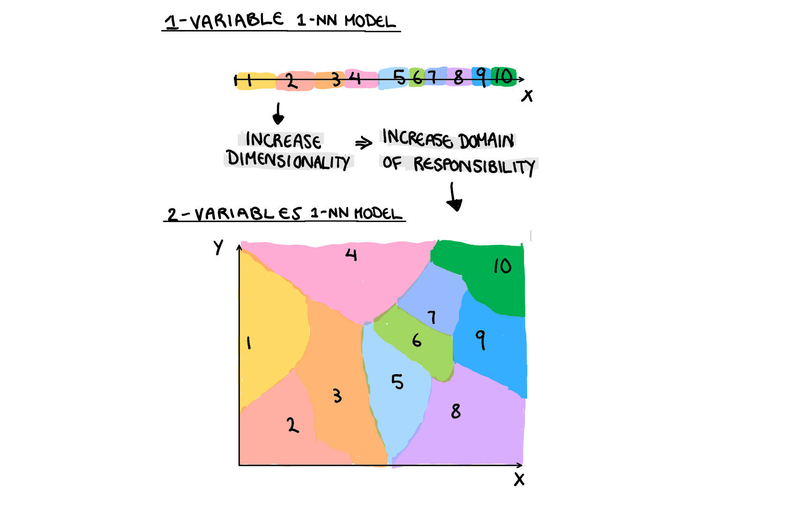
4 Things We Can Learn About Conspiracy Theories and Model Flexibility
A few years ago my mum became very susceptible to suggestion, and made friends with a guy who was really good at speaking about nonsense with the authority to make it sound…
11 August 2020
Harriet Mason
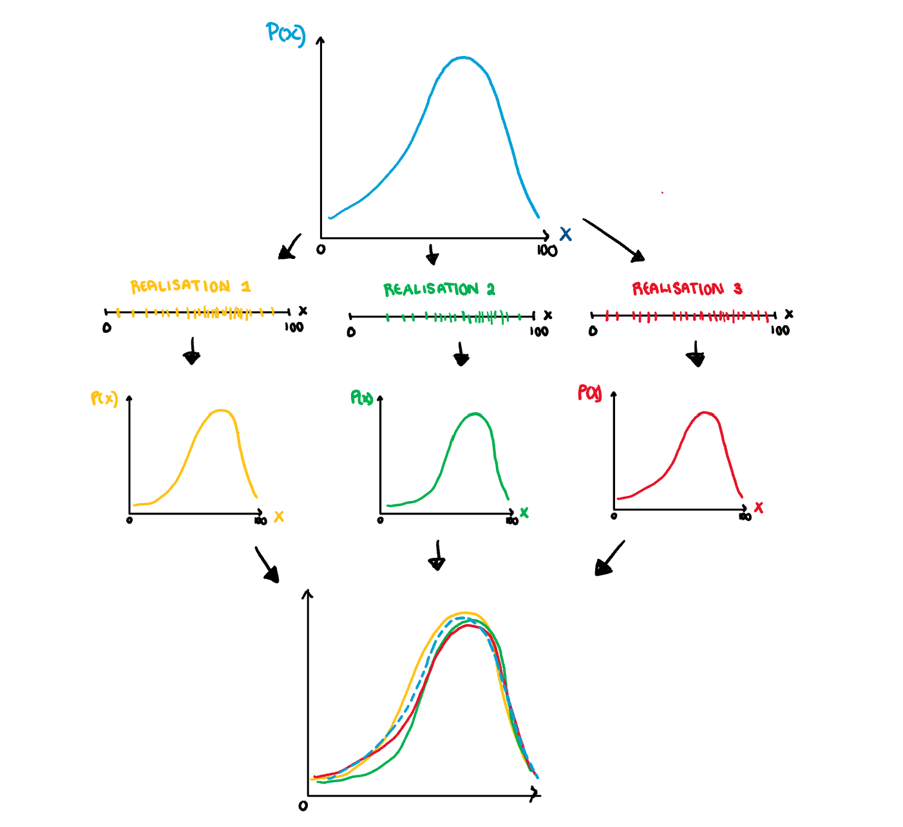
My Idiot Brain Ruined My School’s NAPLAN average, But Bootstrapping Could Have Saved it
Creative writing has never been my forte, however, no attempt was worse than my 5th Grade NAPLAN test. My score was so poor I suspect the examiners were concerned I would…
4 August 2020
Harriet Mason
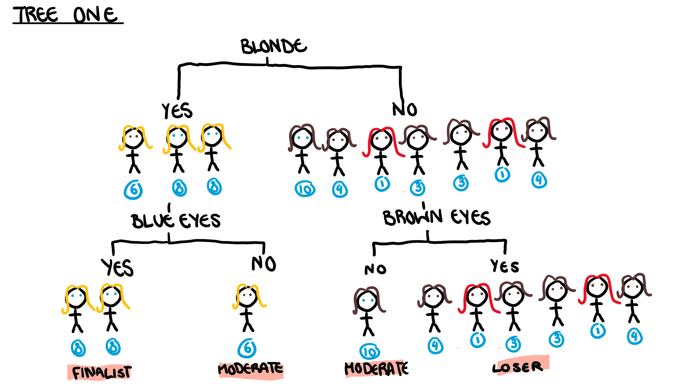
Using the Bachelor to Understand Permutation Variable Importance
The season of the bachelor is upon us, and what better way to celebrate my love of drawn out reality TV, than to use it to explain permutation variable importance in the…
29 July 2020
Harriet Mason
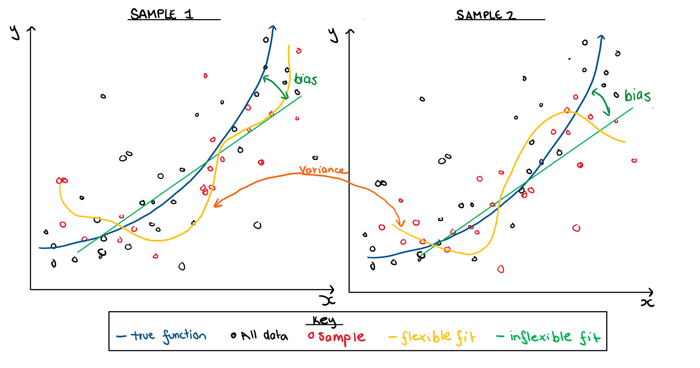
A Deep Dive into How Flexibility Affects The Bias and Variance Trade Off
When we are building a machine learning model you have a choice of a simple, which would be an inflexible, model vs a complicated, or very flexible model. We need to decide…
20 July 2020
Harriet Mason
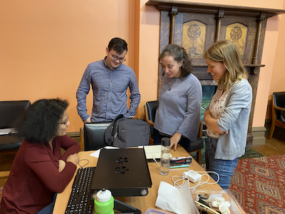
NUMBAT Hackathon 2020
Coding together
The second ever NUMBAT hackathon was held at Abbotsford Convent Feb 19-20, 2020. A hackathon is style like RopenSci events where attendees brainstorm potential projects, and…
19 February 2020
Di Cook
No matching items